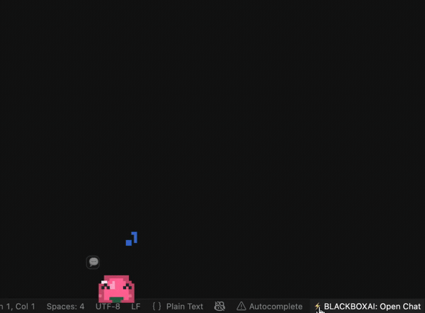
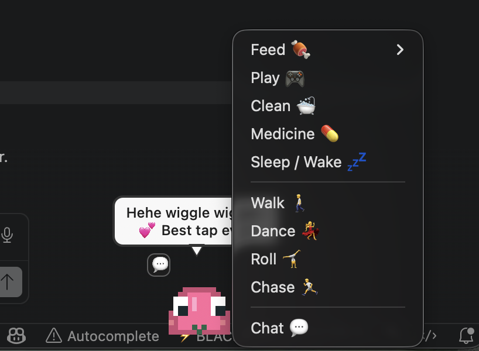
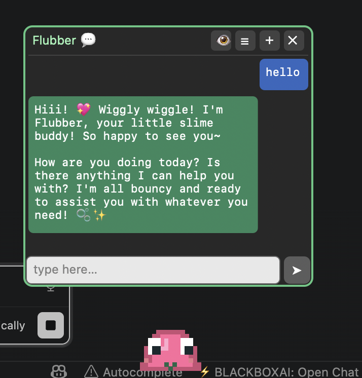

A pixel-art AI slime desktop pet for macOS & Windows. A real-time Tamagotchi and an AI agent that sees your screen, controls your browser and chats with you.

Everything is drawn in code (no image files) — and it actually does things.
Hunger, energy, happiness, cleanliness and health decay in real time — even when closed. It grows from egg to adult, can get sick, and needs care.
Chat with it in a built-in panel with real token-by-token streaming. It uses tools: web search, read pages, weather, reminders and more.
Ask “what's on my screen?” and it captures and analyzes it — the whole desktop or just one app.
Reads the active tab and runs JavaScript to extract text, click, fill forms or navigate (Chrome / Edge / Brave / Safari).
Excluded from screenshots and screen sharing by default, with a one-click toggle. Your recordings stay clean.
Walks, blinks, dances, follows your cursor. Change its color or ask the AI to design a skin by theme (“lava”, “galaxy”).
Works with four AI providers — designed primarily for MiniMax:


Quick answers about Flubber, the AI desktop pet.
Flubber is a free, open-source pixel-art desktop pet for macOS and Windows. It's a real-time Tamagotchi and an AI agent that can search the web, see your screen, control your browser and chat with you.
Yes. Flubber's window is excluded from screenshots, screen recordings and screen sharing (Google Meet, Zoom, QuickTime) by default — using WDA_EXCLUDEFROMCAPTURE on Windows and window sharingType on macOS. There's a one-click toggle to turn it off.
macOS 12+ and Windows 10/11. The macOS app is built in Swift/AppKit; the Windows app is a C#/.NET (WPF) port with functional parity.
Designed primarily for MiniMax, and also compatible with Claude (Anthropic), ChatGPT (OpenAI) and DeepSeek. Without an API key it still runs with canned phrases.
Yes — completely free and open source on GitHub.
Free, open source, and built 100% in native code — Swift/AppKit on macOS, C#/.NET (WPF) on Windows.